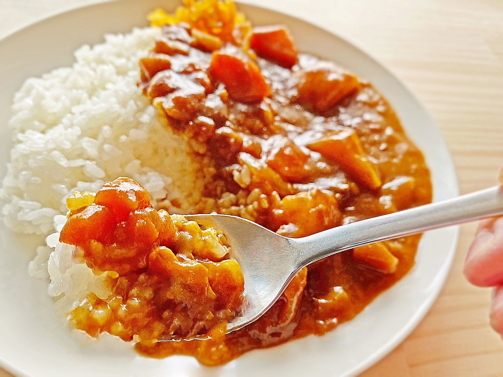

Japanese Curry

Description
Japanese curry is a popular dish eaten in Japan, so much so that many condsider it to be the national dish of Japan. It has a stew like conistancy and generally served with white rice and pickles or salad.
It has a mild sweet/savory flavor compared to Indian curry. Its ingrediants consists of potates, carrots, onions, as well as a meat (pork and beef are often commonly used). It is considered to be a hearty comfort food in Japan. It is so popular that the average Japanese household has curry at least once a week.
Ingredients
- 1 Tbsp of netural oil
- 1 medium onion
- 2 cloves of garlic
- 1 lb of pork (or your choice of protien)
- 3 carrots
- 3 medium potatoes
- 2 3/4 cups of water
- 1 tsp of salt
- Salt and Pepper to taste
For Curry Sauce
- 3 Tbsp unsalted butter
- 4 Tbsp all-purpose flour
- 1 Tbsp curry powder
- 1/2 Tbsp of garam masala
- 1/4 Tsp of cayenne pepper (Optional)
Instructions
- Gather all ingredients. Cut onion into 1 inch wedges. If you prefer you can mince or dice onions instead. Also dice garlic
- Chop meat and vegtables into bite sized pages. I cut mine mine into about 1 inch pieces. I also like to cut my carrots into diagonal slices
- Heat 1 Tbsp of netural oil in large pot over medium heat. Add onion and saute until translucent.
- Add diced garlic and mix well
- Add pork and cook until no long pink on the outside.
- Add carrots and potatoes and stirfry with meat for about 5 mins
- Add 2 3/4 cups of water and bring to boil. Reduce heat, cover and simmer until ingredients are tender (about 15 mins)
- While stew is simmering. Make curry roux. In a small pot melt butter over a medium low heat. Add flour. Stir until combined and roux browns a bit.
- Add curry powder, garam masala, and cayenne pepper and mix till it is incorported in the roux.
- Turn off heat and set aside
- Once potatoes and carrots are soft but not mushy turn off heat. Add roux to pot and mix. Wait for roux to dissolve. About 5 mins, stirring occasually
- Serve hot over rice or noodles
HOME